본 포스트는 서울대학교 컴퓨터공학부 시스템 프로그래밍(System Programming, M1522.000800, Fall 2026) 강의 자료 중 7강 — Memory Abstraction: Recap — Virtual Memory (총 46장)를 바탕으로, 강의를 처음 듣는 독자도 논리적 흐름을 따라갈 수 있도록 재구성한 것입니다. 원본 슬라이드는 영문으로 작성되어 있으며, 본문의 대섹션 구분은 강의 첫머리의 Lecture Outline 슬라이드(Motivation → The Basics → Features of Virtual Memory → Back to Our Example Program → A Real World Example: Intel Core i7 Address Translation → Summary)를 그대로 따랐습니다.
한 줄 요약 (TL;DR)
“가상 주소와 물리 주소 사이에 표 한 겹을 끼워 넣었을 뿐인데, 우리가 메모리에 대해 당연하게 여기던 성질이 전부 그 한 겹에서 나옵니다.”
지금까지 우리는 메모리를 바이트가 늘어선 아주 큰 배열 하나로 다뤄 왔습니다. 이 모델은 프로그램이 하나뿐일 때만 성립합니다. 64비트 주소는 16 EB를 가리킬 수 있는데 실제 DRAM은 몇 GB뿐이고(들어가지 않습니다), 프로세스마다
.text·.data·힙·스택을 어디에 놓을지 정해야 하며(관리), 두 프로세스가 같은 주소를 쓰면 서로의 데이터를 짓밟고(보호), 그러면서도 필요할 때는 같은 메모리를 함께 봐야 합니다(공유). 강의의 해법은 컴퓨터 과학의 상투어 하나 — 간접화(indirection) — 입니다. CPU가 내놓는 주소를 가상 주소(VA)로 강등시키고, 그것을 물리 주소(PA)로 번역하는 표를 프로세스마다 하나씩 두는 것입니다. 이 표가 페이지 테이블(page table), 표를 읽어 번역을 수행하는 하드웨어가 MMU입니다. 번역표가 프로세스마다 다르다는 사실 하나에서 주소 공간 격리가, 두 표가 같은 PPN을 가리킬 수 있다는 사실에서 공유 메모리가, 표의 칸을 비워 둘 수 있다는 사실에서 디맨드 페이징과 스와핑이, 표의 칸에 비트를 몇 개 더 붙일 수 있다는 사실에서 페이지 단위 접근 권한이 곧바로 따라 나옵니다. 마지막으로 이 추상이 실제 하드웨어에서 어떤 모습인지 — Intel Core i7의 4단계 페이지 테이블, 48비트 정규 주소 공간, TLB와 캐시가 번역 경로에 어떻게 끼어드는지 — 를 확인합니다.
1. 동기 (Motivation)
강의는 “가상 메모리란 무엇인가”를 바로 정의하는 대신, 그것이 없을 때 무엇이 깨지는가를 네 개의 문제로 먼저 늘어놓습니다. 해답을 먼저 보면 페이지 테이블은 그저 번거로운 자료구조로 보이지만, 문제를 먼저 보면 그것이 최소한의 장치임을 알게 됩니다.
1.1 지금까지의 메모리 (Memory Up Until Now)
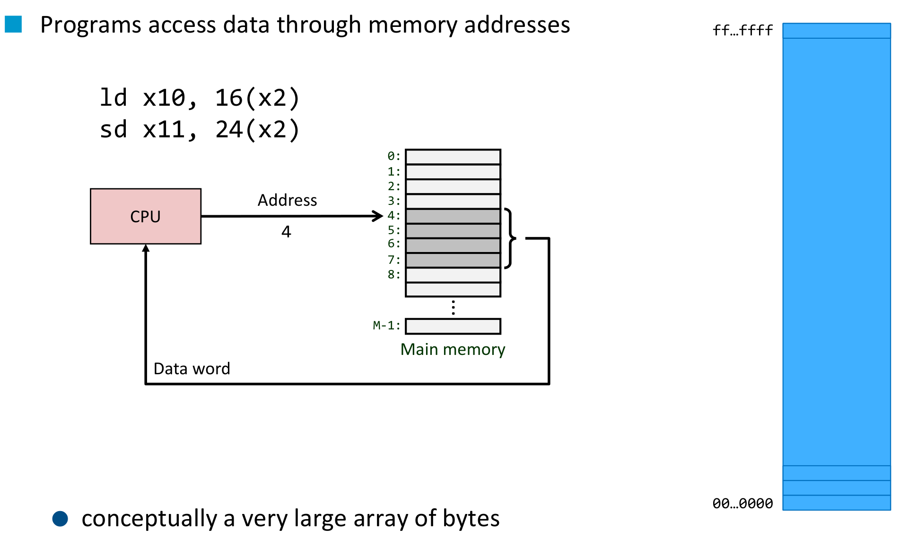
ld x10, 16(x2)와 sd x11, 24(x2)는 RISC-V의 적재(load)·저장(store) 명령으로, 두 명령 모두 레지스터 x2의 값에 상수를 더한 수 하나를 메모리에 건넵니다. 가운데에서 분홍색 CPU 상자가 그렇게 계산한 주소(Address = 4)를 오른쪽 Main memory로 보내면, 메모리는 0:부터 M-1:까지 번호가 매겨진 칸 중 해당 칸의 내용을 Data word라는 이름의 화살표로 CPU에 되돌려 줍니다 — 회색으로 음영 처리된 4번부터 7번 칸이 한 번에 읽히는 워드에 해당합니다. 오른쪽 끝의 파란 세로 막대는 이 주소 공간 전체를 00…0000부터 ff…ffff까지 하나의 연속된 구간으로 그린 것이며, 슬라이드 아래의 “conceptually a very large array of bytes”라는 한 줄이 이 모델의 전부입니다. 이 그림에 프로세스라는 개념이 어디에도 없다는 점이 다음 절부터 무너질 지점입니다.- 프로그램은 메모리 주소를 통해 데이터에 접근합니다. 위의
ld/sd처럼, 명령어가 주소를 계산해 메모리에 건네면 메모리가 값을 돌려줍니다. - 이때 메모리는 개념적으로 아주 큰 바이트 배열 하나(conceptually a very large array of bytes)입니다.
0번부터M-1번까지 칸이 있고, 주소는 그 칸의 번호입니다.
이 모델에는 잘못된 것이 없습니다. 다만 가정이 하나 숨어 있습니다 — 이 배열을 쓰는 주체가 하나뿐이라는 것. 그 가정을 걷어내는 순간 네 개의 문제가 동시에 터집니다.
1.2 문제 1: 모든 것을 어떻게 담을 것인가 (Problem 1: How does everything fit?)
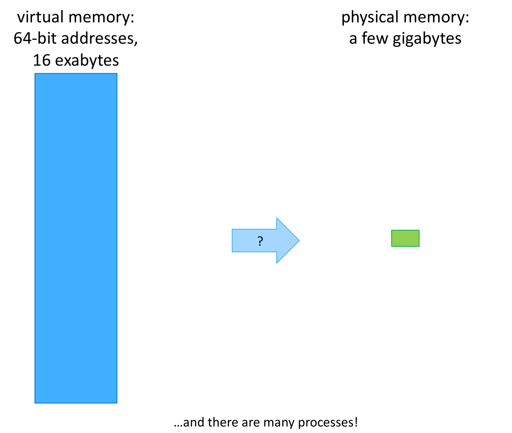
- 가상 메모리: 64비트 주소 → \(2^{64}\) 바이트 = 16 엑사바이트.
- 물리 메모리: 고작 수 기가바이트.
- 게다가 그런 프로세스가 여러 개 있습니다.
산술적으로 담기지 않습니다. 그런데도 우리는 프로그램을 짤 때 “메모리가 부족하다”는 걱정을 거의 하지 않습니다. 그 사이의 간극을 무언가가 메우고 있다는 뜻입니다.
1.3 문제 2: 메모리 관리 (Problem 2: Memory Management)
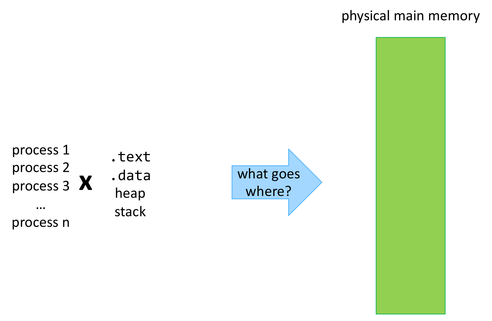
.text(기계어 코드), .data(초기화된 전역 변수), heap(동적 할당 영역), stack(함수 호출 프레임) — 이 나열되어 있고, 두 목록 사이의 곱셈 기호 X가 실제로 배치해야 할 대상이 “프로세스 수 × 영역 수”만큼이라는 뜻을 담고 있습니다. 오른쪽의 초록 막대는 이들을 전부 수용해야 하는 단 하나의 physical main memory이며, 가운데 화살표 안의 “what goes where?”가 이 절의 질문입니다. 즉 문제 1이 “공간이 모자란다”는 양의 문제였다면, 이 그림은 설령 공간이 충분하더라도 누구를 어디에 놓을지 정하는 일 자체가 남는다는 배치의 문제를 가리킵니다.프로세스 하나가 아니라 \(n\)개이고, 프로세스마다 .text · .data · 힙 · 스택이 따로 있습니다. 이 모두를 하나의 물리 메모리 어디에 놓을 것인가를 누군가는 결정해야 합니다.
- 컴파일 시점에 주소를 못 박아 두면, 두 프로그램이 같은 주소를 요구하는 순간 동시에 실행할 수 없습니다.
- 실행 시점에 빈자리를 찾아 넣으면, 프로그램마다 매번 다른 주소에 놓이므로 컴파일된 코드의 주소를 전부 고쳐야 합니다.
1.4 문제 3·4: 보호와 공유 (Problem 3: Protection / Problem 4: Sharing)
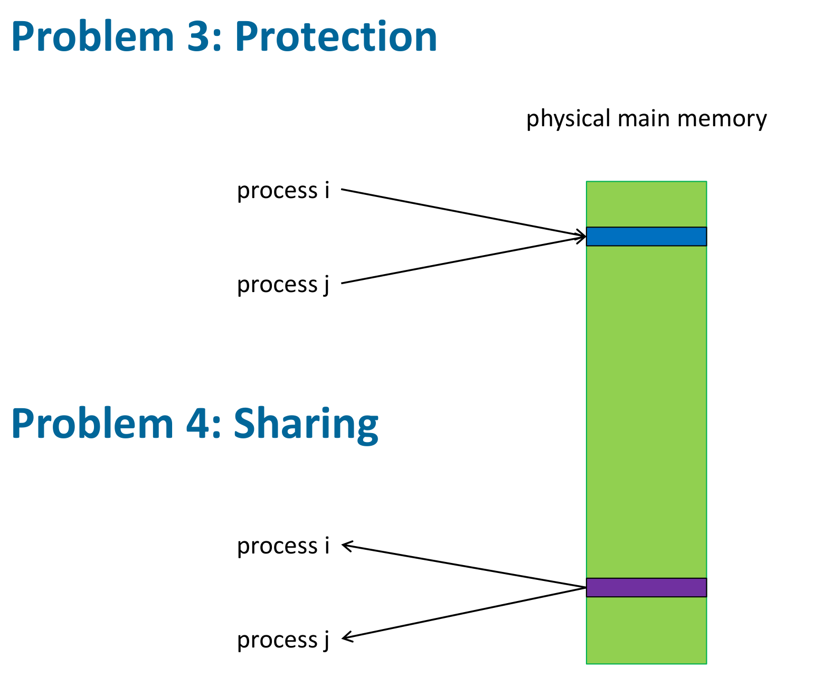
- 문제 3 (보호): 프로세스 \(i\)와 \(j\)가 같은 물리 위치에 접근하면, 한쪽의 실수가 다른 쪽을 망가뜨립니다. 원리적으로 다른 프로세스의 메모리를 읽어 갈 수도 있습니다.
- 문제 4 (공유): 그렇다고 완전히 갈라놓을 수도 없습니다. 공유 라이브러리처럼 같은 코드를 여러 프로세스가 함께 쓰는 편이 압도적으로 이득인 경우가 있고, 프로세스 간 통신도 필요합니다.
둘은 “물리 페이지 하나를 여러 프로세스가 본다”는 동일한 상황의 두 얼굴입니다. 그러므로 “절대 못 보게 한다”는 해법은 공유를 죽이고, “마음대로 보게 한다”는 해법은 보호를 죽입니다. 필요한 것은 기본적으로는 막되, 지정한 경우에만 정확히 열어 주는 스위치이며, 뒤에 나올 페이지 테이블이 정확히 그 스위치입니다. 프로세스마다 표가 따로 있으니 기본은 격리이고, 두 표의 칸에 같은 값을 적으면 그 페이지만 공유됩니다.
1.5 해법: 간접화 (Solution: Indirection)
네 문제의 해법은 하나입니다. 프로세스와 물리 메모리 사이에 한 겹을 끼워 넣는 것입니다.
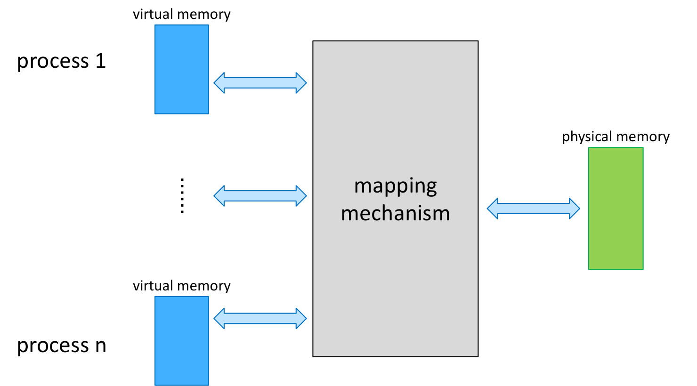
- 각 프로세스는 자기만의 사적인 메모리 공간(private memory space)을 갖습니다.
- 이것으로 앞의 네 문제가 모두 해결됩니다(Solves all our previous problems!).
어떻게 한꺼번에 해결되는지는 3장에서 기능별로 하나씩 확인할 것이고, 그 전에 2장에서 이 “한 겹”의 정체를 밝힙니다.
2. 기본 원리 (The Basics)
2.1 가상 주소는 물리 주소의 추상화입니다 (The Basics)
- 가상 메모리(virtual memory)는 물리 메모리의 추상화(abstraction of physical memory)입니다.
- 더 구체적으로, 가상 주소(virtual address, VA)는 물리 주소(physical address, PA)의 추상화입니다.
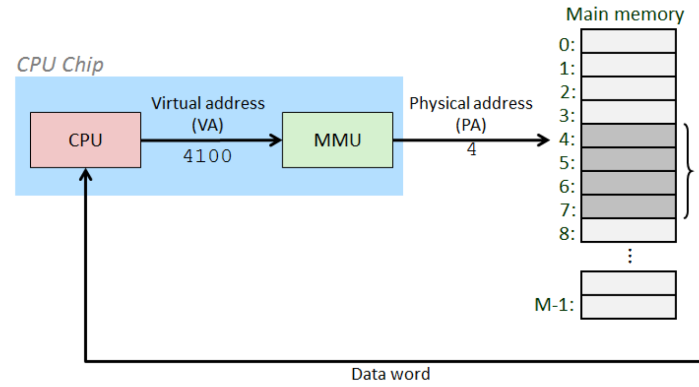
4100 — 입니다. 이 VA는 같은 칩 안의 초록색 MMU 상자를 통과하면서 Physical address (PA) — 예시에서는 4 — 로 번역되고, 칩 바깥의 Main memory에는 오직 이 PA만 전달됩니다. 오른쪽 메모리에서 회색으로 음영 처리된 4–7번 칸이 그 PA가 가리키는 워드이며, 읽어 낸 값은 아래쪽 Data word 화살표를 따라 CPU로 돌아옵니다. 1.1절의 그림과 비교하면 달라진 것은 CPU와 메모리 사이에 MMU 상자 하나가 끼어들었다는 것뿐인데, 4100과 4라는 두 숫자가 보여 주듯 프로그램이 말하는 주소와 메모리가 듣는 주소가 더 이상 같지 않다는 점이 모든 변화의 출발점입니다.- CPU는 여전히 주소를 계산해 내놓습니다. 달라진 것은 그 주소가 곧바로 메모리에 가지 않는다는 점입니다.
- 구현은 VA와 PA 사이의 간접화(indirection between VA and PA)로 이루어집니다.
2.2 VA에서 PA로의 변환 (Translation of VA to PA)
번역을 바이트 단위로 하면 표가 주소 공간만큼 커져 버립니다. 그래서 주소 공간을 고정 크기 덩어리로 자르고, 덩어리 단위로만 번역합니다. 이 덩어리가 페이지(page)입니다.
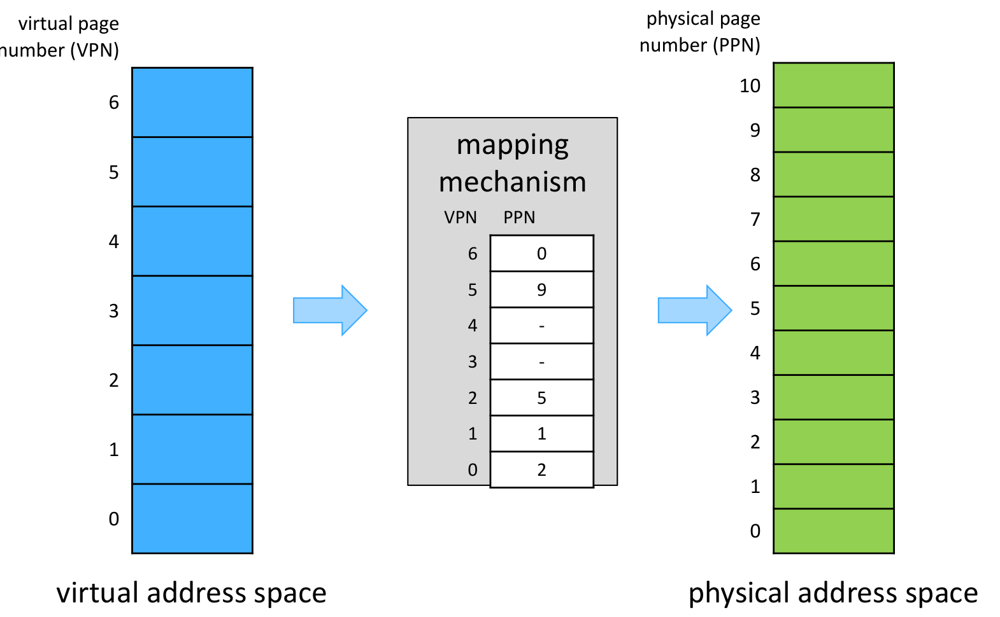
-이 적혀 있습니다. 이 하이픈이 결정적입니다. 가상 페이지가 반드시 물리 페이지를 가져야 하는 것은 아니며, 대응이 없는 페이지는 아직 물리 메모리에 자리를 차지하지 않습니다. 가상 공간이 7칸인데 물리 공간이 11칸이라는 점, 그리고 번호가 서로 뒤죽박죽이라는 점도 함께 읽어야 합니다 — 번역표는 순서를 보존할 의무가 없습니다.- 가상 주소 공간은 가상 페이지로, 물리 주소 공간은 물리 페이지로 나뉩니다. 둘의 크기는 같습니다.
- 번역은 VPN → PPN 대응만 다룹니다. 페이지 안에서의 위치는 건드리지 않습니다.
- 표의 어떤 칸은 비어 있을 수 있습니다(위 그림의
-). 이것이 문제 1을 푸는 열쇠입니다 — 16 EB의 가상 공간 중 실제로 쓰는 몇 개 페이지만 물리 메모리를 점유하면 됩니다.
구체적인 번역 예시 — VA 0x233
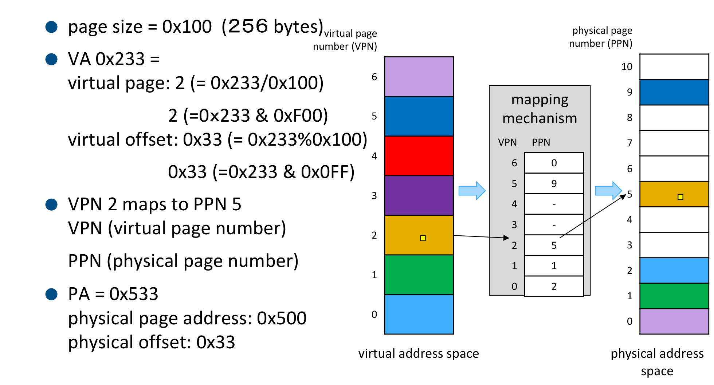
0x100 = 256바이트입니다. 가상 주소 0x233은 가상 페이지 번호 2(0x233 / 0x100, 또는 상위 비트를 남기는 마스크 0x233 & 0xF00)와 가상 오프셋 0x33(0x233 % 0x100, 또는 하위 비트를 남기는 마스크 0x233 & 0x0FF)으로 쪼개집니다. 오른쪽 그림에서 왼쪽 기둥의 주황색 VPN 2 칸 안에 찍힌 작은 사각형이 바로 이 주소이고, 가운데 mapping mechanism 표에서 VPN 2 행이 PPN 5를 담고 있으므로 화살표가 오른쪽 기둥의 주황색 PPN 5 칸으로 이어집니다. 결과적으로 물리 페이지 주소는 0x500, 여기에 오프셋 0x33이 그대로 더해져 PA = 0x533이 됩니다. 두 기둥에서 같은 색이 서로 다른 높이에 놓여 있다는 사실이 번역의 본질입니다 — 페이지 안에서의 위치(0x33)는 보존되고, 페이지가 놓인 자리만 바뀝니다.계산을 정리하면 다음과 같습니다. 페이지 크기를 \(\mathrm{PS} = \texttt{0x100} = 256\)이라 하면,
\[ \mathrm{VPN} = \left\lfloor \frac{\texttt{0x233}}{\texttt{0x100}} \right\rfloor = 2, \qquad \mathrm{offset} = \texttt{0x233} \bmod \texttt{0x100} = \texttt{0x33} \]
표에서 \(\mathrm{VPN}\ 2 \mapsto \mathrm{PPN}\ 5\)이므로, 물리 페이지의 시작 주소는 \(5 \times \texttt{0x100} = \texttt{0x500}\)이고
\[ \mathrm{PA} = \texttt{0x500} + \texttt{0x33} = \texttt{0x533} \]
슬라이드는 가상 페이지 번호를 2 (=0x233 & 0xF00)으로, 가상 오프셋을 0x33 (=0x233 & 0x0FF)으로 병기합니다. 오프셋 쪽은 마스크만으로 값이 맞지만(0x233 & 0x0FF = 0x33), 페이지 번호 쪽은 마스크 결과가 0x200이지 2가 아닙니다. 마스크는 “상위 비트만 남긴다”는 자리 선택까지만 하고, 그것을 번호로 바꾸려면 오른쪽으로 8비트 시프트(= 0x100으로 나누기)가 한 번 더 필요합니다.
\[ \underbrace{\texttt{0x233} \mathbin{\&} \texttt{0xF00}}_{=\ \texttt{0x200}} \gg 8 = 2 \]
페이지 크기가 \(2^p\)일 때 이 두 연산은 나눗셈·나머지의 비트 표현일 뿐입니다. 하드웨어가 곱셈기나 나눗셈기 없이 주소 비트를 그냥 잘라 쓰는 것만으로 번역을 끝낼 수 있는 이유가 여기에 있고, 페이지 크기가 반드시 2의 거듭제곱이어야 하는 이유이기도 합니다.
번역을 일반식으로 쓰면
강의는 이 절차를 다음과 같이 형식화합니다.
- 주어진 것
- 페이지 크기(page size, PS) — 가상 페이지 크기와 물리 페이지 크기는 같습니다.
- 페이지 테이블(page table, PT) — VPN을 PPN으로 보내는 번역표이며, 표의 한 칸을 페이지 테이블 엔트리(page table entry, PTE)라고 부릅니다.
- 번역
\[ \mathrm{PA} \;=\; \mathrm{PT}\!\left[\, \mathrm{VA} \,/\, \mathrm{PS} \,\right] \;+\; \mathrm{VA} \bmod \mathrm{PS} \]
앞 절의 마스크 표기와 마찬가지로, 이 식에도 곧이곧대로 읽으면 어긋나는 대목이 있습니다. 위 식에 VPN = 2를 넣으면 \(\mathrm{PT}[2] + \texttt{0x33}\)이 되고, 이것이 0x533이 되려면 \(\mathrm{PT}[2] = \texttt{0x500}\)이어야 합니다. 그런데 앞 그림의 표에는 5가 적혀 있었습니다. 즉 이 식은 \(\mathrm{PT}[\cdot]\)이 물리 페이지의 시작 주소를 돌려준다고 읽어야 하며, 표가 페이지 번호 \(\mathrm{PPN}\)을 담고 있다면 다음처럼 크기를 곱해 주어야 합니다.
\[ \mathrm{PA} \;=\; \mathrm{PPN} \times \mathrm{PS} \;+\; (\mathrm{VA} \bmod \mathrm{PS}) \]
슬라이드가 physical page address: 0x500과 PPN 5를 함께 적어 둔 것은 이 둘이 \(\mathrm{PS}\)배만큼 차이 나는 같은 정보이기 때문입니다. 실제 하드웨어는 곱셈 대신 PPN 비트열 뒤에 오프셋 비트열을 이어 붙이는 것(concatenation)으로 이 식을 구현합니다 — 5장에서 Core i7이 40비트 PPN과 12비트 PPO를 그대로 붙여 52비트 PA를 만드는 모습이 바로 이것입니다.
2.3 메모리 관리 장치 (Memory Management Unit)
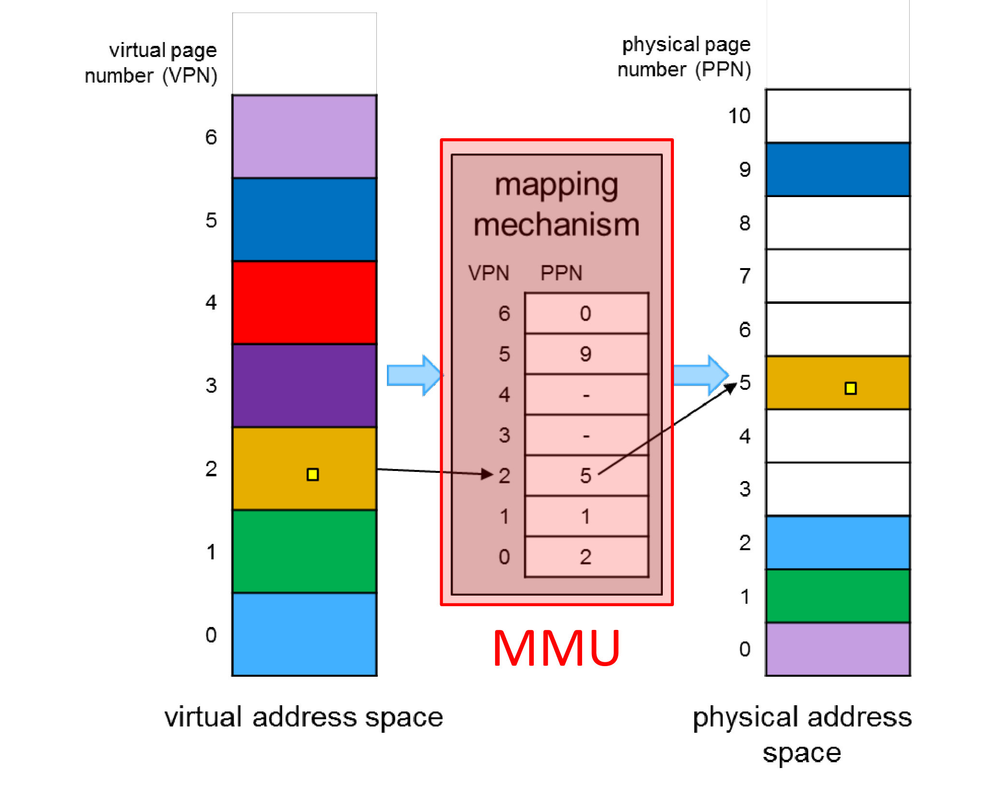
- 메모리 관리 장치(Memory Management Unit, MMU)는 VA → PA 번역을 수행하는 하드웨어 유닛입니다.
- 번역은 시간에 민감하며(time critical), 반드시 빨라야 합니다. 모든 적재·저장 명령이 예외 없이 이 경로를 지나기 때문입니다.
그렇다면 표 자체는 어디에 있을까요? 표는 프로세스마다 하나씩 있고 크기도 작지 않으므로 칩 안에 넣을 수 없습니다.
- 페이지 테이블은 주기억장치(main memory)에 저장되고, MMU는 그것을 가리키는 포인터 하나만 들고 있습니다.
- 그 포인터를 담는 레지스터가 페이지 테이블 베이스 레지스터(page table base register, PTBR)입니다.
- Intel 아키텍처에서 PTBR의 이름은
CR3입니다. 5장에서 Core i7의 4단계 번역이CR3에서 출발하는 모습을 다시 보게 됩니다.
이 한 줄이 3장 전체의 전제입니다. 표가 메모리에 있고 MMU가 포인터만 들고 있다면, 그 포인터 하나만 바꾸면 주소 공간 전체가 통째로 교체됩니다. 문맥 전환(context switch)이 하는 일이 바로 그것입니다.
2.4 메모리 계층 구조의 예 (An Example Memory Hierarchy)
여기서 강의는 잠시 방향을 틀어 캐시를 복습합니다. 뒤에서 “물리 메모리는 디스크의 캐시”라는 주장을 할 것이기 때문에, 캐시의 어휘를 먼저 정비해 두는 것입니다.
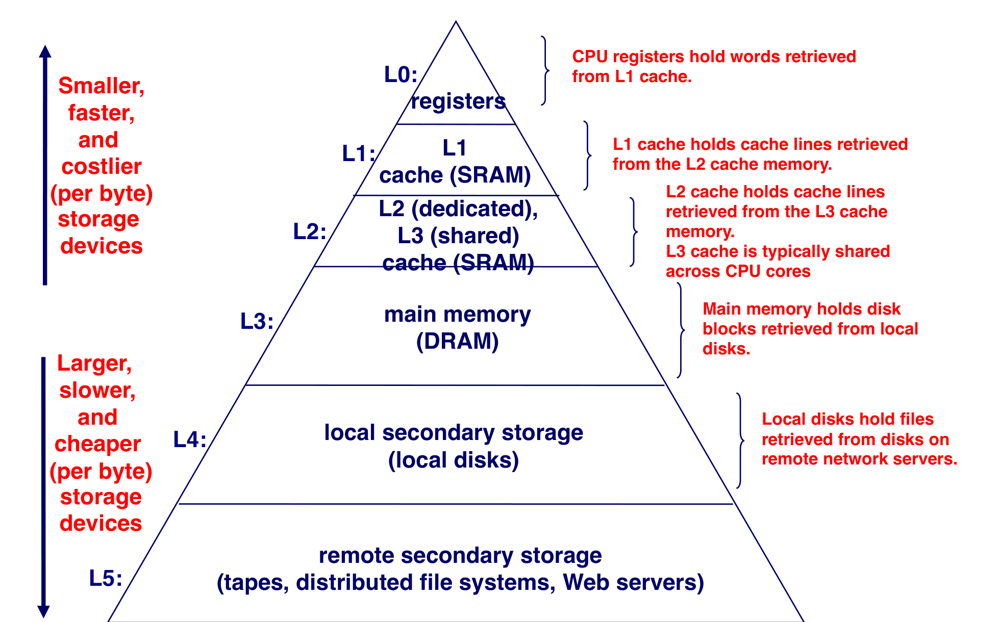
2.5 참조 지역성 (Locality of Reference)
계층 구조가 작동하는 이유는 프로그램의 메모리 접근이 무작위가 아니기 때문입니다.
지역성에는 두 종류가 있습니다.
- 시간 지역성(temporal locality): 최근에 참조된 항목은 가까운 미래에 다시 참조될 가능성이 높습니다.
- 공간 지역성(spatial locality): 주소가 가까운 항목들은 시간적으로도 가까이 참조되는 경향이 있습니다.
강의가 드는 예제는 배열의 합을 구하는 흔한 반복문입니다.
sum = 0;
for (i = 0; i < n; i++)
sum += a[i];
return sum;- 프로그램 데이터
- 시간 지역성: 변수
sum이 매 반복마다 다시 쓰입니다. - 공간 지역성:
a[i]다음에 곧바로a[i+1]이 접근됩니다.
- 시간 지역성: 변수
- 명령어
- 시간 지역성:
for반복문의 본문을 반복해서 순환합니다. - 공간 지역성: 명령어들이 순서대로 참조됩니다.
- 시간 지역성:
2.6 지역성이 캐싱을 효과적으로 만듭니다 (Locality Makes Caching Effective)
- 캐시(cache)란 더 크고 느린 장치에 있는 데이터의 부분집합(subset)을 담아 두는, 더 작고 빠른 임시 보관 장치(staging area)입니다.
- 캐싱과 메모리 계층
- 레벨 \(k\)의 저장 장치는 레벨 \(k+1\)의 캐시입니다. 이것이 앞 피라미드의 구조를 한 문장으로 요약한 것입니다.
- 레지스터는 L1/L2 캐시와 주기억장치의 캐시입니다.
- 주기억장치는 디스크의 캐시입니다. ← 가상 메모리가 서 있는 자리입니다.
- 디스크는 원격 저장소에 있는 파일의 캐시입니다.
- 접근의 지역성이 관건입니다.
- 대부분의 접근이 처음 몇 개의 (빠른) 층에서 해결됩니다.
- 아주 적은 수의 접근만 마지막 몇 개의 (느린) 층까지 내려갑니다.
2.7 메모리 계층에서의 캐싱 (Caching in a Memory Hierarchy)
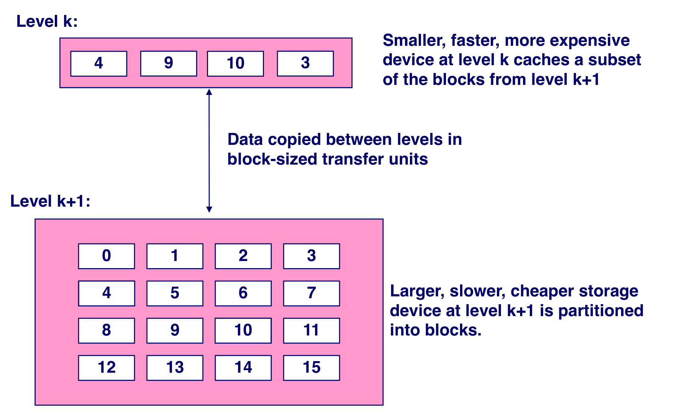
2.8 캐시 블록 크기 (Cache Block Sizes)
- 고정 크기 vs. 가변 크기
- 고정 크기 블록이 관리하기 쉽습니다 — 일반적인 경우입니다.
- 가변 크기 블록은 저장 공간을 더 효율적으로 씁니다.
- 블록 크기
- 레벨 \(k+1\) 장치의 접근 시간에 의존합니다.
- 계층의 아래로 내려갈수록 블록이 커집니다.
- 예컨대 디스크는 탐색 시간(seek time)이 느리므로 디스크 페이지가 더 큽니다.
- 예시
| 층 | 블록(전송 단위)의 크기 |
|---|---|
| CPU 레지스터 | 4바이트(32비트) 또는 8바이트(64비트 CPU) 워드 |
| L1/L2 캐시 | 32바이트(32비트) 또는 64바이트(64비트 CPU) 블록 |
| 주기억장치 | 4 KB 페이지 (2 MB/1 GB 페이지로 설정할 수도 있습니다) |
| 디스크 | 파일 전체 |
왜 아래로 갈수록 블록이 커지는지는 비용 구조를 보면 분명해집니다. 접근 비용이 고정 비용 + 전송량 × 단가의 꼴이기 때문입니다. 디스크처럼 고정 비용(탐색 시간)이 압도적으로 큰 장치에서는 한 번 갈 때 많이 가져오는 것이 언제나 이득이고, 레지스터처럼 고정 비용이 거의 없는 곳에서는 딱 필요한 만큼만 가져오는 것이 낫습니다. 4 KB라는 페이지 크기는 이 절충이 디스크와 DRAM 사이에서 내려앉은 지점이며, 2 MB·1 GB 거대 페이지(huge page)는 같은 절충을 “페이지 테이블을 훑는 비용”까지 포함해 다시 계산한 결과입니다.
2.9 캐시 적중과 실패 (Cache Hit and Miss)
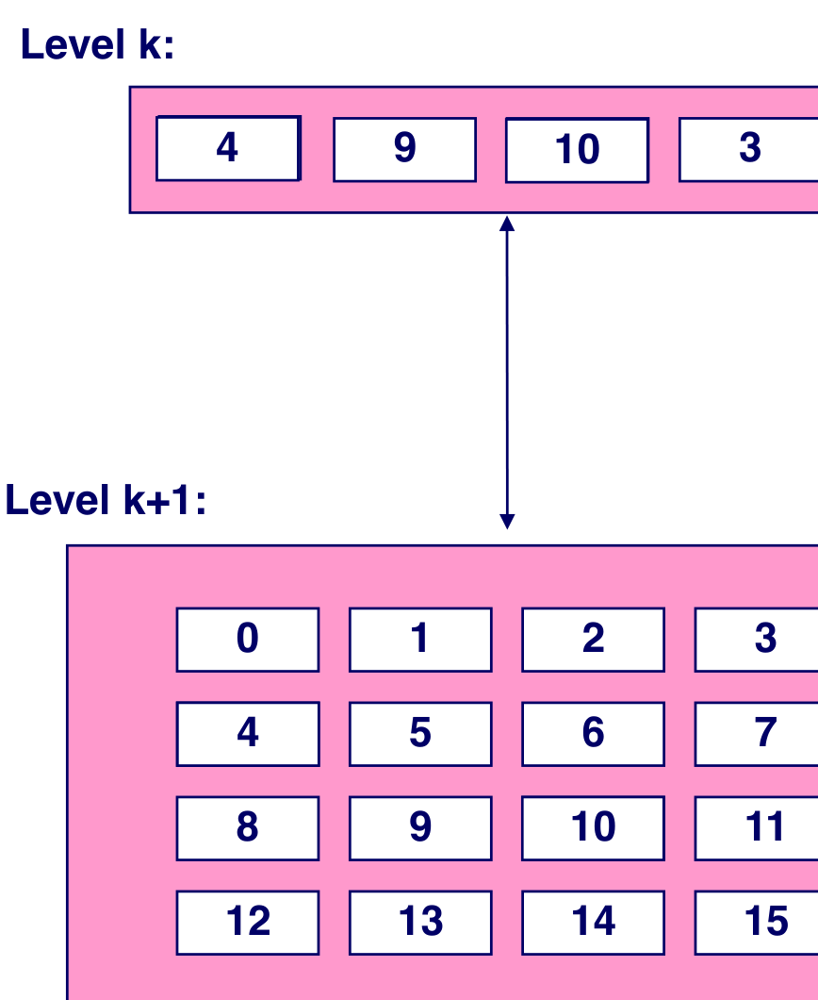
2.10 캐시 실패의 세 종류 (Three Kinds of Cache Misses)
| 종류 | 원인 | 예 |
|---|---|---|
| 차가운 실패(cold / compulsory miss) | 해당 블록에 한 번도 접근한 적이 없어서 발생합니다 | 어떤 코드 구간이 처음 실행될 때, 특정 배열이 처음 참조될 때 |
| 용량 실패(capacity miss) | 활성 블록 집합(이른바 “작업 집합”, working set)이 캐시보다 클 때 발생합니다 | 1000바이트 캐시 안에서 1200바이트 배열을 다룰 때 |
| 충돌 실패(conflict miss) | 일부 캐시는 블록이 놓일 수 있는 위치를 제한하는데, 여러 블록이 같은 위치로 사상될 때 발생합니다 | “블록 \(i\)는 캐시 위치 \(i \bmod 4\)에만 놓인다”는 규칙 아래에서 블록 0, 8, 0, 8, 0, 8, …을 참조하면 매번 실패합니다 |
2.11 캐시 교체 (Cache Replacement)
- 캐시에서 블록을 쫓아내기(evicting)
- 새 블록을 들여오려면 자리가 필요하고, 그러려면 “희생자(victim)”를 골라야 합니다.
- 최적 교체 정책(optimal eviction policy)
- 다시는 접근되지 않을 블록을 쫓아냅니다.
- 그런 블록이 없다면, 가장 먼 미래에 접근될 블록을 쫓아냅니다.
- 그러나 미래를 알지 못하면 구현할 수 없습니다.
- 과거로 미래를 예측하기
- 가장 오래 전에 사용된(least recently used, LRU) 블록을 쫓아냅니다.
- 곧 다시 쓰이지 않을 것이라고 가정하는 셈입니다.
- 그런데 LRU는 구현 비용이 비쌉니다.
- 접근 시각을 계속 추적해야 하기 때문입니다.
- 그래서 실제로는 LRU를 근사하는 더 단순한 방식이 쓰입니다.
최적 정책이 “구현 불가능”한데도 의미가 있는 이유를 덧붙여 둡니다. 미래를 아는 정책(이른바 Belady의 최적 알고리즘)은 실행할 수 없지만 측정할 수는 있습니다. 어떤 실행의 참조 기록을 전부 남겨 둔 뒤 사후에 계산하면, “이 작업부하에서 도달 가능한 최소 실패 횟수”라는 하한이 나옵니다. LRU가 좋은 정책인지 아닌지는 이 하한과의 거리로 판정되며, 그래서 구현할 수 없는 정책이 평가 기준의 자리를 차지합니다. 2.5절의 시간 지역성은 “과거를 미래의 대용으로 쓴다”는 LRU의 도박이 대개 성공하는 이유를 설명해 줍니다.
2.12 캐시는 누가 관리하는가 (Who Manages the Cache?)
| 층 | 무엇의 캐시인가 | 관리 주체 | 방식 |
|---|---|---|---|
| 레지스터 | L1/L2/L3 캐시와 주기억장치 | 컴파일러가 명시적으로 | 어떤 데이터를 레지스터에 올리고 내릴지 결정하며, 비교적 정교한 코드 분석 기법을 사용합니다 |
| L1/L2/L3 캐시 | 주기억장치 | 하드웨어 | 비교적 단순한 메커니즘(예: “\(i \bmod 4\)”) |
| 주기억장치 | 디스크 | (현대에는) 운영체제 | 비교적 정교한 메커니즘(예: LRU 유사 정책) |
- 주기억장치를 운영체제가, 그것도 정교한 방식으로 관리하는 이유는 명확합니다 — 디스크에서 읽어 오는 일이 극도로 시간을 많이 잡아먹기 때문입니다. 한 번의 실패 비용이 수십만 배 차이 나므로, 실패를 줄이는 데 소프트웨어 수준의 계산을 투자할 가치가 있습니다.
이 표가 2장의 결론입니다. “주기억장치 = 디스크의 캐시”, “관리 주체 = 운영체제”라는 두 칸이 곧 가상 메모리의 정의를 캐시의 언어로 다시 쓴 것입니다. 페이지 테이블의 빈 칸은 캐시에 없는 블록이고, 그 칸에 접근하는 순간 발생하는 페이지 폴트(page fault)는 캐시 실패이며, 물리 메모리가 꽉 찼을 때 어떤 페이지를 내보낼지 고르는 일은 캐시 교체입니다. 3.4절에서 이 대응을 그림으로 확인합니다.
3. 가상 메모리의 기능 (Features of Virtual Memory)
이제 1장에서 제기한 네 문제로 돌아가, 페이지 테이블 한 겹에서 각각의 해답이 어떻게 따라 나오는지를 확인합니다.
3.1 주소 공간 격리 (Address Space Isolation)
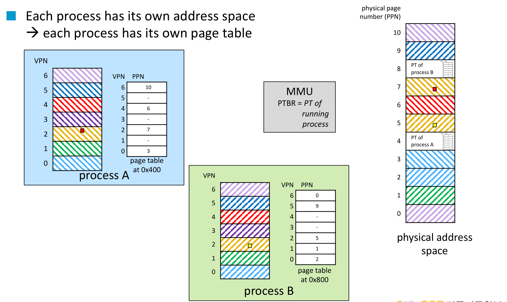
0x400에, B의 표는 주소 0x800에 있습니다. 두 표의 내용은 완전히 다릅니다. A는 6→10, 4→6, 2→7, 0→3으로, B는 6→0, 5→9, 2→5, 1→1, 0→2로 사상되며, 값이 없는 행에는 하이픈이 적혀 있습니다. 오른쪽 기둥은 하나뿐인 physical address space(PPN 0–10)이고, 그 안에 PPN 4에 “PT of process A”, PPN 8에 “PT of process B”가 들어 있다는 점이 중요합니다 — 페이지 테이블 자체도 물리 메모리에 놓인 평범한 데이터입니다. 가운데 회색 MMU 상자에는 PTBR = PT of running process라고 적혀 있는데, 이 한 줄이 격리의 전부입니다. 어느 순간에도 유효한 번역표는 지금 실행 중인 프로세스의 것 하나뿐이므로, A가 어떤 VA를 계산해 내더라도 B의 페이지에는 도달할 방법 자체가 없습니다.- 각 프로세스는 자기만의 주소 공간을 갖습니다 → 각 프로세스는 자기만의 페이지 테이블을 갖습니다.
- MMU의 PTBR은 “현재 실행 중인 프로세스의 페이지 테이블”을 가리킵니다.
A에서 B로 전환할 때 커널이 하는 일은 PTBR에 0x800을 적는 것입니다. 그 순간부터 같은 VA 0x233이 전혀 다른 물리 페이지를 가리킵니다. 보호는 검사(check)로 얻어진 것이 아니라 도달 불가능성(unreachability)으로 얻어진 것이라는 점이 핵심입니다 — 다른 프로세스의 메모리를 들여다보려는 시도를 막는 코드가 따로 있는 것이 아니라, 애초에 그 물리 페이지를 지목할 수 있는 가상 주소가 존재하지 않습니다.
3.3 가상 주소 공간과 물리 주소 공간의 분리 (Decoupling of Virtual from Physical Address Space)
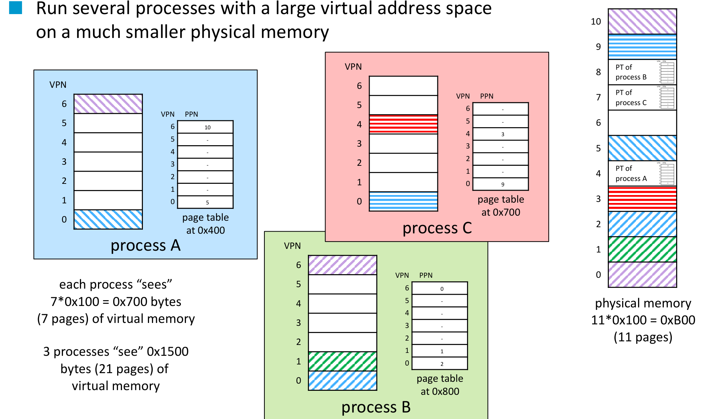
0x400, 0x800, 0x700)을 갖는데, 각 기둥에서 실제로 색칠된 칸은 한두 개뿐이고 나머지는 흰색입니다. 흰 칸은 대응되는 물리 페이지가 없는 페이지, 즉 표에서 하이픈으로 남아 있는 행입니다. 왼쪽 아래 주석이 계산을 정리합니다 — 각 프로세스는 \(7 \times \texttt{0x100} = \texttt{0x700}\)바이트(7페이지)를 “본다”고 믿으므로 세 프로세스를 합치면 \(\texttt{0x1500}\)바이트(21페이지)인데, 오른쪽 physical memory는 \(11 \times \texttt{0x100} = \texttt{0xB00}\)바이트(11페이지)뿐입니다. 그럼에도 21 > 11인 채로 모순 없이 돌아갑니다. 오른쪽 기둥에 세 프로세스의 페이지 테이블(PPN 4·7·8의 “PT of process A/C/B”)까지 함께 들어 있다는 점을 보면 실제 여유는 더 적습니다. 요컨대 주소 공간의 합은 물리 메모리를 초과해도 되며, 제약은 “가상 페이지의 총수”가 아니라 “동시에 실제로 쓰이는 페이지의 수”에만 걸립니다.- 큰 가상 주소 공간을 가진 여러 프로세스를 훨씬 작은 물리 메모리 위에서 실행할 수 있습니다.
- 세 프로세스가 도합 21페이지의 가상 메모리를 “본다”고 믿는 동안, 물리 메모리는 11페이지뿐입니다.
이 여유는 페이지 수가 커질수록 극적으로 벌어집니다.
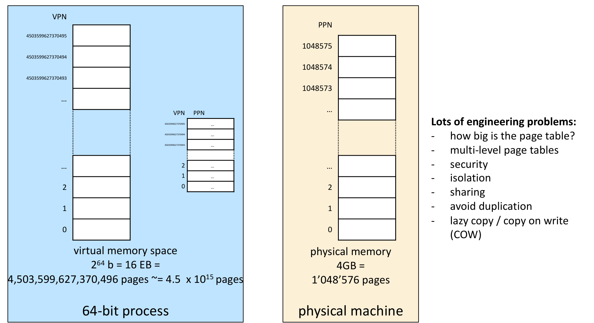
숫자를 확인해 두면 감이 잡힙니다. 페이지 크기 \(\mathrm{PS} = 4\,\mathrm{KB} = 2^{12}\)일 때,
\[ \frac{2^{64}}{2^{12}} = 2^{52} = 4{,}503{,}599{,}627{,}370{,}496 \ \text{페이지}, \qquad \frac{4\,\mathrm{GB}}{4\,\mathrm{KB}} = \frac{2^{32}}{2^{12}} = 2^{20} = 1{,}048{,}576 \ \text{페이지} \]
\(2^{52}\)개의 엔트리를 가진 배열을 프로세스마다 하나씩 두어야 한다면, 엔트리 하나가 8바이트라 해도 \(2^{55}\)바이트 = 32 PB의 표가 필요합니다. 물리 메모리 4 GB로는 표 한 장도 담지 못합니다. 슬라이드가 “multi-level page tables”를 숙제 목록의 두 번째에 적어 둔 이유가 이것이며, 5.3절에서 Core i7이 이 문제를 표를 4단계로 쪼개고 쓰지 않는 가지는 아예 만들지 않는 방식으로 해결하는 것을 보게 됩니다.
3.4 캐시로서의 물리 메모리 (Physical Memory as a Cache)
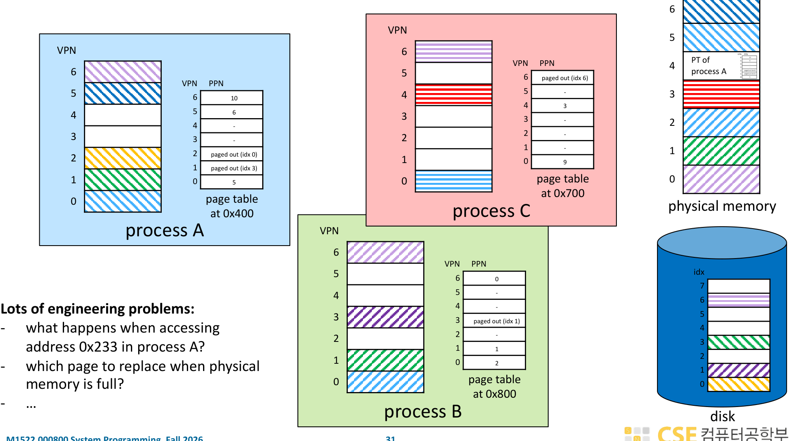
idx 0부터 7까지의 슬롯이 그려져 있고 밀려난 페이지들의 무늬가 그 안에 들어 있습니다. 왼쪽 아래의 “Lots of engineering problems”는 이 설계가 남기는 두 질문을 제기합니다 — (i) process A에서 주소 0x233에 접근하면 무슨 일이 일어나는가? (A의 표에서 VPN 2는 paged out (idx 0)이므로 이 접근은 페이지 폴트를 일으킵니다) (ii) 물리 메모리가 꽉 찼을 때 어떤 페이지를 내보낼 것인가? (2.11절의 교체 정책이 그대로 재등장합니다.)- 디스크를 스와핑(swapping)에 사용합니다 — 이것을 요구 페이징(on-demand paging)이라고 부릅니다.
- 페이지 테이블 엔트리는 이제 두 가지 상태 중 하나입니다. 물리 페이지 번호를 담고 있거나, “디스크의 어느 자리에 있다”는 표시를 담고 있거나.
0x233)
2.2절에서 계산했듯 0x233은 VPN 2입니다. 그림에서 process A의 VPN 2 엔트리는 paged out (idx 0)이므로 다음이 일어납니다.
- MMU가 번역을 시도하다가 유효한 PPN이 없음을 발견하고 예외(page fault)를 일으킵니다.
- 제어가 커널로 넘어갑니다. 커널은 엔트리에 적힌
idx 0을 보고 디스크의 0번 슬롯에서 페이지를 읽어 옵니다. - 물리 메모리에 빈 페이지가 없다면 희생자를 골라 내보냅니다(2.11절의 LRU 유사 정책). 그 페이지가 수정된 적이 있다면 디스크에 먼저 써야 합니다.
- 읽어 온 페이지의 PPN을 엔트리에 적고, 폴트를 일으킨 명령을 처음부터 다시 실행합니다.
핵심은 4번입니다. 프로그램은 자기 명령이 한 번 실패했다가 다시 실행되었다는 사실을 알지 못합니다. 그래서 “물리 메모리보다 큰 주소 공간”이라는 거짓말이 유지됩니다.
3.5 메모리 접근 권한 (Memory Access Permissions)
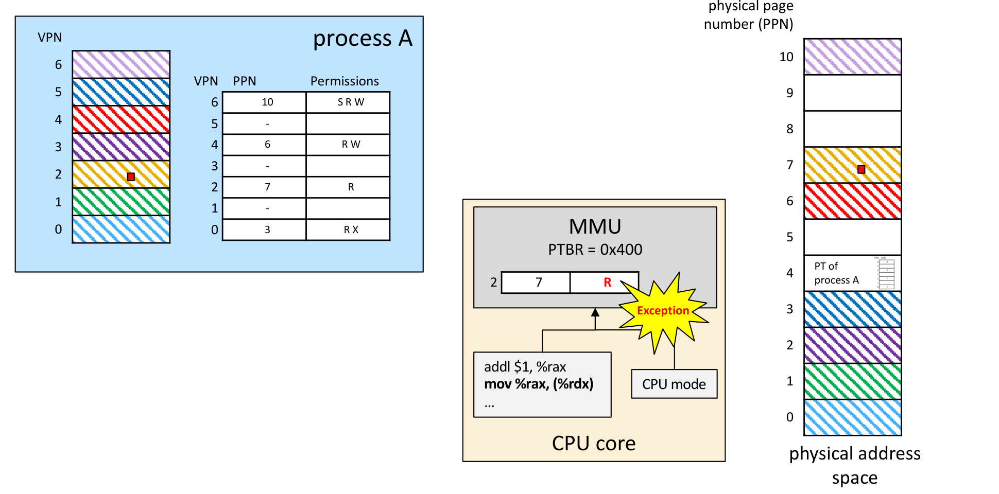
S R W, VPN 4 → PPN 6은 R W, VPN 2 → PPN 7은 R, VPN 0 → PPN 3은 R X입니다. 즉 같은 프로세스 안에서도 페이지마다 읽기·쓰기·실행·특권 여부가 따로 정해집니다. 가운데 주황색 CPU core 영역이 위반이 잡히는 순간을 그립니다. 아래 상자의 명령어 addl $1, %rax 다음의 mov %rax, (%rdx) — 즉 메모리에 쓰는 명령 — 이 실행되면서, 회색 MMU(PTBR = 0x400) 안에서 VPN 2가 PPN 7로 번역되는데 그 권한 칸이 빨간 R, 곧 읽기 전용입니다. 쓰기 요청과 읽기 전용 권한이 충돌하는 지점에서 노란 별 모양의 “Exception”이 터지고, 이때 CPU mode(사용자/커널 모드)도 함께 입력으로 들어가 S 표시가 붙은 페이지의 접근 가부를 결정합니다. 오른쪽은 이 모든 일이 벌어지는 physical address space입니다.- 페이지마다 접근 권한을 정의하여 버그와 공격으로부터 보호합니다.
- 위반은 소프트웨어의 검사가 아니라 번역 도중 하드웨어가 일으키는 예외로 잡힙니다. 비용이 0에 가깝다는 뜻입니다 — 어차피 표를 읽고 있었으니, 같은 엔트리의 비트 몇 개를 함께 보는 것뿐입니다.
오늘날 우리가 당연하게 여기는 보호 장치들이 전부 이 한 열에서 나옵니다.
- 읽기 전용 코드 영역:
.text를R X로 두면 실행 중인 코드를 실수로든 고의로든 덮어쓸 수 없습니다. - 쓰기 가능하지만 실행 불가능한 데이터 영역: 스택과 힙을
R W(실행 권한 없음)로 두면, 그곳에 주입된 바이트열을 명령어로 실행할 수 없습니다. 5.4절에 나올 Core i7 PTE의 XD(Execute Disable) 비트가 바로 이 장치입니다. - 커널 전용 페이지:
S표시가 붙은 페이지는 CPU가 커널 모드일 때만 접근할 수 있습니다. 5.4절의 U/S 비트에 대응합니다. - 쓰기 시 복사(copy-on-write): 공유 페이지를 일단 양쪽 모두 읽기 전용으로 걸어 두었다가, 누군가 쓰려는 순간 예외를 받아 그때 비로소 복사합니다. 3.3절 숙제 목록의 마지막 항목이 이 기법입니다.
4. 예제 프로그램으로 돌아가기 (Back to Our Example Program)
이제 지금까지의 그림이 실제로 돌아가는 C 프로그램에서 어떻게 나타나는지 확인합니다. 앞 회차는 두 프로세스가 같은 주소를 찍는데 값이 따로 논다는 관측을 제시하고 “How is that possible?”이라는 물음으로 끝났는데, 이 장이 그 답입니다.
4.1 동기를 부여하는 예제 (Motivating Example)
질문은 하나입니다 — 함수와 변수는 어디로 가는가(Where do functions & variables go?)
6강 Recap: Variables and Memory에서 살펴본 예제 프로그램 layout.c는 자기 안의 여러 심볼 주소를 그대로 찍어 보여 줍니다.
$ ./layout
[7375] Memory addresses
&foo(): 0x5621d0284400
&bar(): 0x5621d0284410
&main(): 0x5621d02840f0
&global_int: 0x5621d0287080
&global_arr: 0x5621d02870c0
&global_ptr: 0x5621d06870c0
&local_int: 0x7fff202b87c0
&local_arr: 0x7fff202b87b8
&local_ptr: 0x7fff202b87bc
global_ptr: 0x7fe24e283010- 함수들(
foo,bar,main)과 전역 변수들은0x5621d0…대에, 지역 변수들은0x7fff20…대에 몰려 있습니다. 즉 코드·전역 데이터와 스택이 서로 멀리 떨어진 구역을 차지합니다. - 마지막 줄이 특히 중요합니다.
&global_ptr(포인터 변수 자신의 주소)은0x5621d06870c0인 반면,global_ptr(그 포인터가 담고 있는 값)은0x7fe24e283010입니다. 포인터 변수는 전역 데이터 구역에 있고, 그것이 가리키는 대상은 또 다른 구역에 있습니다. - 그리고 이 주소들은 전부 가상 주소입니다. 이 사실이 이번 절의 결론을 끌어냅니다.
이 강의가 사용하는 버전은 여기에 공유 메모리와 fork를 얹은 것입니다.
…
#define N 1024*1024
int global_int = 0;
…
struct __shared {
sem_t m;
int shared_int;
} *shared;
…
int main(int argc, char *argv[])
{
…
//
// create & initialize shared memory area
//
shared = (struct __shared*)mmap(NULL, sizeof(struct __shared),
PROT_READ|PROT_WRITE, MAP_ANONYMOUS|MAP_SHARED, 0, 0);
if (shared == MAP_FAILED) {
perror("Cannot map shared memory");
return EXIT_FAILURE;
}
sem_init(&shared->m, 1, 1);
shared->shared_int = 0;
…
//
// create child processes
// each process has a different 'delay' value
//
while (nproc > 1) {
if (fork() == 0) break;
nproc--;
}
delay = nproc;
…
//
// endless loop increasing global_int / shared_int
//
while (1) {
…
// increase variables
global_int++;
sem_wait(&shared->m);
shared->shared_int++;
sem_post(&shared->m);
sleep(delay);
}
return EXIT_SUCCESS;
}이 프로그램에는 거의 똑같아 보이는 두 개의 정수가 있습니다.
global_int— 평범한 전역 변수입니다.shared->shared_int—mmap에MAP_ANONYMOUS | MAP_SHARED를 주어 얻은 익명 공유 영역 안의 정수입니다.
둘 다 전역적으로 접근 가능하고, 둘 다 ++로 증가시킵니다. 차이는 페이지 테이블 엔트리의 플래그 한 칸뿐이며, 그 한 칸이 fork 이후의 동작을 완전히 갈라놓습니다.
4.2 프로세스 A에서의 배치
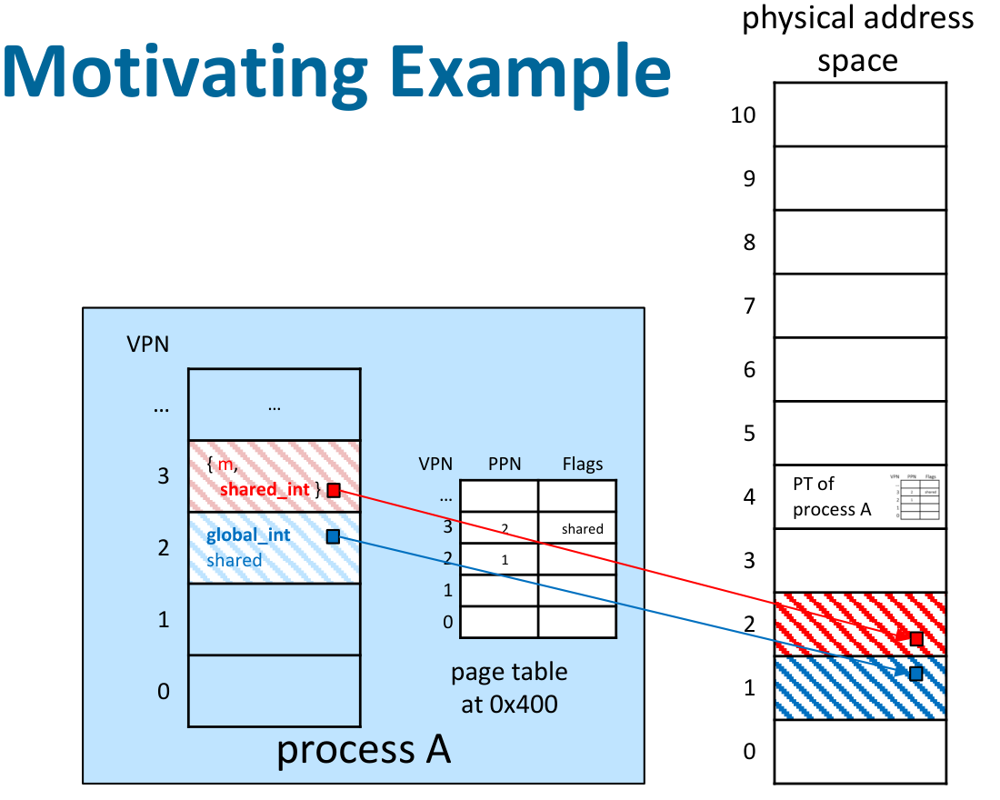
fork 이전, 프로세스가 하나뿐인 상태의 배치입니다. 왼쪽 파란 영역이 process A의 가상 주소 공간으로, VPN 3 칸에는 ( m, shared_int ) — 즉 mmap이 돌려준 익명 공유 영역에 들어 있는 세마포어 m과 정수 shared_int — 이 놓이고, VPN 2 칸에는 global_int와 포인터 변수 shared 자신이 놓입니다(둘 다 전역 데이터이므로 같은 페이지에 모입니다). 오른쪽 page table at 0x400은 이번에는 VPN · PPN · Flags 세 열을 갖는데, VPN 3 → PPN 2 행의 Flags 칸에만 shared가 적혀 있고 VPN 2 → PPN 1 행의 Flags 칸은 비어 있습니다. 오른쪽 physical address space에서 빨간 사각형 표식이 PPN 2를, 파란 사각형 표식이 PPN 1을 가리키며, 두 개의 사선 화살표가 각각의 대응을 잇습니다. 지금은 프로세스가 하나뿐이므로 두 변수의 처지가 전혀 달라 보이지 않는다는 점이 중요합니다 — 차이는 오직 Flags 열에 적힌 단어 하나이고, 그 차이는 다음 그림에서야 드러납니다.global_int와 포인터 변수shared는 같은 전역 데이터 페이지(VPN 2 → PPN 1)에 놓입니다.mmap이 돌려준 영역{m, shared_int}는 별도의 페이지(VPN 3 → PPN 2)에 놓이고, 그 엔트리에만shared플래그가 붙습니다.
4.3 fork 이후: 프로세스 B
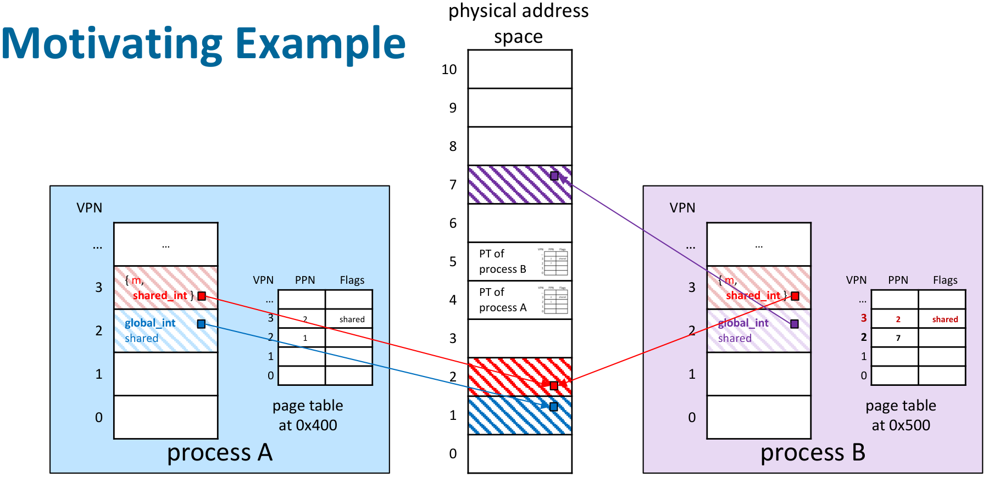
fork() 한 번으로 두 세계가 갈라지는 순간입니다. 아래 코드 상자의 while (nproc > 1) { if (fork() == 0) break; nproc--; }가 자식 프로세스를 만들고, 그 결과 왼쪽 파란 process A(페이지 테이블 0x400)와 오른쪽 보라 process B(페이지 테이블 0x500)가 나란히 놓입니다. 두 프로세스의 가상 주소 공간은 모양이 똑같습니다 — 양쪽 모두 VPN 3에 ( m, shared_int ), VPN 2에 global_int와 shared가 있습니다. 그런데 가운데 physical address space를 보면 사정이 다릅니다. 빨간 화살표 두 개는 A의 VPN 3과 B의 VPN 3에서 출발해 같은 물리 페이지 PPN 2로 모이지만(B의 표에서도 3 → 2이고 Flags가 shared), 보라색 화살표는 B의 VPN 2를 PPN 7이라는 전혀 다른 물리 페이지로 보냅니다(B의 표에서 2 → 7). A의 VPN 2는 여전히 PPN 1을 가리킵니다. 물리 메모리에는 두 프로세스의 페이지 테이블(PPN 4의 “PT of process A”, PPN 5의 “PT of process B”)도 함께 놓여 있습니다. 요컨대 fork는 부모의 페이지 테이블을 복사하되, shared로 표시된 엔트리는 같은 PPN을 그대로 두고 나머지는 사본을 만들어 새 PPN을 적습니다. 두 변수의 운명이 갈리는 지점이 정확히 여기입니다.- 두 프로세스는 같은 가상 주소에서 두 변수를 봅니다. 가상 주소만 보면 구별되지 않습니다.
- 그러나
shared플래그가 붙은 페이지만 같은 PPN을 공유하고, 평범한 전역 데이터 페이지는 각자의 사본을 갖습니다.
4.4 실행 결과
프로그램을 두 개의 프로세스로 실행하면 다음과 같은 출력이 나옵니다(대괄호 안이 PID입니다).
…
[16074] global_int = mem[0x55d2946ed0e0] = 0; shared_int = mem[0x7f8e5cbdf020] = 0
[16075] global_int = mem[0x55d2946ed0e0] = 0; shared_int = mem[0x7f8e5cbdf020] = 1
[16074] global_int = mem[0x55d2946ed0e0] = 1; shared_int = mem[0x7f8e5cbdf020] = 2
[16074] global_int = mem[0x55d2946ed0e0] = 2; shared_int = mem[0x7f8e5cbdf020] = 3
[16075] global_int = mem[0x55d2946ed0e0] = 1; shared_int = mem[0x7f8e5cbdf020] = 4
[16074] global_int = mem[0x55d2946ed0e0] = 3; shared_int = mem[0x7f8e5cbdf020] = 5
[16075] global_int = mem[0x55d2946ed0e0] = 2; shared_int = mem[0x7f8e5cbdf020] = 6
[16074] global_int = mem[0x55d2946ed0e0] = 4; shared_int = mem[0x7f8e5cbdf020] = 7
…두 변수의 값 변화를 프로세스별로 갈라 적으면 대비가 선명해집니다.
global_int (프로세스 A) |
shared_int (공유) |
global_int (프로세스 B) |
|---|---|---|
| 1 | 1 | |
| 2 | 1 | |
| 2 | 3 | |
| 3 | 4 | |
| 5 | 2 | |
| 4 | 6 | |
| 7 | 3 |
출력에서 두 프로세스가 찍은 global_int의 주소는 0x55d2946ed0e0으로 완전히 동일합니다. 그런데 값은 각자 따로 올라갑니다. 한편 shared_int의 주소 0x7f8e5cbdf020도 두 프로세스에서 동일한데, 이쪽은 값이 하나의 수열로 이어집니다 — 1, 2, 3, …이 A와 B의 증가를 번갈아 받아 가며 증가합니다.
같은 가상 주소가 한 번은 서로 다른 물리 페이지를, 한 번은 같은 물리 페이지를 가리킨 것입니다. “주소가 같으면 같은 변수”라는 직관이 여기서 완전히 무너집니다. 3장의 그림들이 추상적으로 주장했던 격리와 공유가, 한 화면의 로그 안에서 동시에 관측됩니다.
덧붙여, shared_int를 증가시키는 자리에만 sem_wait / sem_post가 감겨 있는 이유도 여기서 나옵니다. 진짜로 공유되는 메모리이므로 경쟁 상태(race condition)가 성립하고, 따라서 상호 배제가 필요합니다. global_int++에는 그런 보호가 없는데, 애초에 다른 프로세스가 건드릴 수 없는 메모리라 필요가 없습니다.
5. 실제 사례: Intel Core i7 주소 변환 (A Real World Example: Intel Core i7 Address Translation)
지금까지의 그림에서 페이지 테이블은 일곱 칸짜리 표 하나였습니다. 실제 하드웨어에서는 어떤 모습일까요.
5.1 Intel Core i7 메모리 시스템 (Intel Core i7 Memory System)
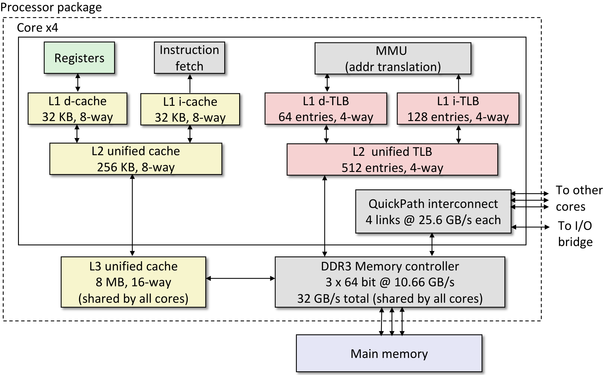
TLB(translation lookaside buffer)는 VPN → PPN 번역 결과를 담아 두는 캐시입니다. 2.6절의 논리를 그대로 한 번 더 적용한 것입니다 — 페이지 테이블이 메모리에 있다면 번역 한 번마다 메모리 접근이 추가로 필요하고, 다단계 표라면 단계 수만큼 필요합니다. 그런데 주소 참조에도 지역성이 있으므로, 최근에 쓴 번역 결과를 칩 안에 캐싱해 두면 대부분의 접근이 표를 읽지 않고 끝납니다.
위 그림에서 TLB가 명령어용(i-TLB)과 데이터용(d-TLB)으로 나뉘었다가 L2에서 합쳐지는(unified) 구조가 L1/L2 캐시와 판박이인 것은 우연이 아니라 같은 설계 원리의 재적용입니다.
5.2 Core i7의 종단 간 주소 변환 (End-to-end Core i7 Address Translation)
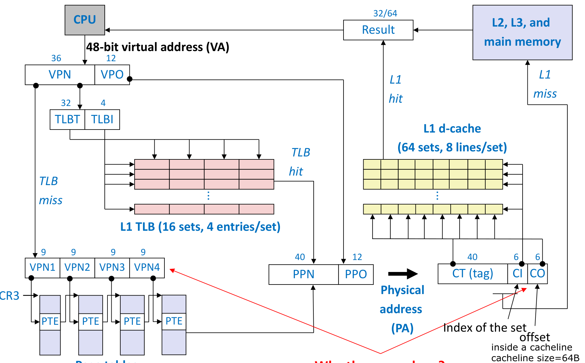
붉은 물음표에 답해 보면, 그림의 모든 숫자가 앞 절의 제원에서 곧바로 나옵니다.
| 필드 | 폭 | 어디서 나오는가 |
|---|---|---|
| VPO (가상 페이지 오프셋) | 12 | 페이지 크기 \(4\,\mathrm{KB} = 2^{12}\) |
| VPN (가상 페이지 번호) | 36 | 가상 주소 48비트 \(-\) VPO 12비트 |
| TLBI (TLB 집합 인덱스) | 4 | L1 TLB가 16개 집합 \(= 2^{4}\) |
| TLBT (TLB 태그) | 32 | VPN 36비트 \(-\) TLBI 4비트 |
| VPN1–VPN4 | 9씩 | 36비트를 4단계로 균등 분할, \(4 \times 9 = 36\) |
| PPO (물리 페이지 오프셋) | 12 | VPO와 같습니다 — 번역되지 않고 그대로 통과합니다 |
| PPN (물리 페이지 번호) | 40 | 물리 주소가 52비트 |
| CO (캐시 블록 오프셋) | 6 | 캐시 라인 크기 \(64\,\mathrm{B} = 2^{6}\) |
| CI (캐시 집합 인덱스) | 6 | L1 d-cache가 64개 집합 \(= 2^{6}\) |
| CT (캐시 태그) | 40 | 물리 주소 52비트 \(-\) CI 6비트 \(-\) CO 6비트 |
L1 TLB의 총 엔트리 수도 맞아떨어집니다 — \(16 \ \text{집합} \times 4 \ \text{엔트리} = 64\)이고, 이는 5.1절의 L1 d-TLB 64 entries, 4-way와 같습니다.
VPO가 번역되지 않는다는 사실은 뜻밖의 여유를 만들어 냅니다. VPO와 PPO가 같은 12비트라는 것은 주소의 하위 12비트가 번역을 기다릴 필요가 없다는 뜻입니다. L1 d-cache의 CI(6비트)와 CO(6비트)를 합치면 정확히 12비트이므로, 캐시의 집합 인덱스를 번역이 끝나기 전에 계산할 수 있습니다. 즉 TLB 조회와 캐시 집합 선택을 병렬로 진행하다가, 태그 비교 시점에만 번역 결과를 쓰면 됩니다. 캐시 크기 32 KB, 8-way, 64 B 라인이라는 조합이 하필 \(32\,\mathrm{KB} / 8 / 64\,\mathrm{B} = 64\)개 집합을 만들어 내는 것은 이 병렬화가 성립하도록 역산된 설계입니다.
5.3 Core i7 페이지 테이블 변환 (Core i7 Page Table Translation)
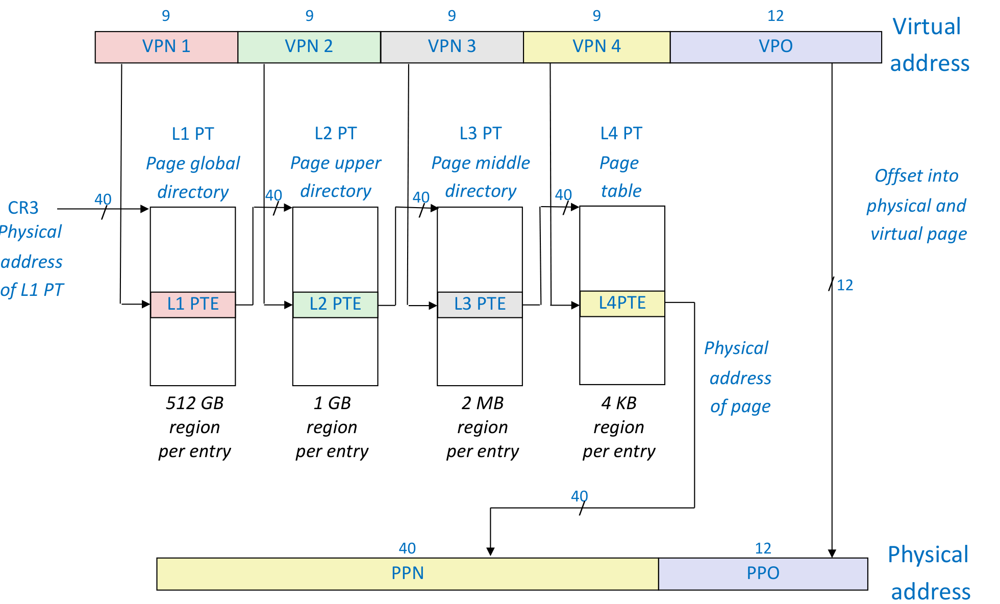
- 가상 페이지 번호 36비트를 9비트씩 네 조각으로 나누고, 조각 하나가 한 단계의 표에서 한 행을 고릅니다.
- 각 표는 \(2^{9} = 512\)개의 엔트리를 갖고, 엔트리 하나가 8바이트이므로 표 한 장이 정확히 \(512 \times 8 = 4\,\mathrm{KB}\) — 페이지 하나에 딱 들어갑니다.
- 한 엔트리가 담당하는 영역은 아래에서 위로 512배씩 커집니다.
\[ 4\,\mathrm{KB} \xrightarrow{\ \times 512\ } 2\,\mathrm{MB} \xrightarrow{\ \times 512\ } 1\,\mathrm{GB} \xrightarrow{\ \times 512\ } 512\,\mathrm{GB} \]
1차원 배열이라면 \(2^{36}\)개의 엔트리를 전부 만들어야 합니다. 다단계 표에서는 쓰지 않는 가지를 아예 만들지 않습니다 — 상위 단계 엔트리의 P(Present) 비트를 0으로 두면 그 아래 512개(또는 \(512^2\), \(512^3\))개의 페이지가 통째로 “없는 것”이 되고, 하위 표를 위한 메모리도 할당되지 않습니다.
layout.c의 출력처럼 코드·전역 데이터가 0x5621…대에, 스택이 0x7fff…대에 멀찍이 떨어져 있어도 비용이 들지 않는 이유가 이것입니다. 두 구역 사이의 광대한 빈 공간은 상위 단계에서 엔트리 몇 개의 P = 0으로 표현될 뿐입니다. 반대로 대가도 분명합니다 — TLB가 실패하면 표를 네 번 타야 하므로 메모리 접근이 네 번 추가됩니다. 5.1절에서 TLB에 그렇게 공을 들인 이유입니다.
5.4 Core i7 레벨 4–2 페이지 테이블 엔트리 (Core i7 Level 4-2 Page Table Entries)
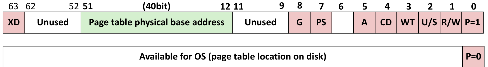
P = 1, 즉 자식 페이지 테이블이 물리 메모리에 있을 때의 해석입니다. 비트 번호가 오른쪽 0부터 왼쪽 63까지 매겨져 있고, 오른쪽 끝부터 P(0) · R/W(1) · U/S(2) · WT(3) · CD(4) · A(5) · (6번 미사용) · PS(7) · G(8)이 한 비트씩 놓이며, 11–9는 Unused, 가운데 초록색으로 강조된 51–12의 40비트가 “Page table physical base address”, 62–52는 Unused, 맨 왼쪽 63번이 XD입니다. 아래쪽 띠는 P = 0일 때로, 이때는 엔트리 전체가 운영체제의 자유 공간(“Available for OS (page table location on disk)”)이 됩니다 — 3.4절에서 페이지 테이블 엔트리가 “디스크의 몇 번 슬롯”을 적어 두던 바로 그 자리입니다. 하나의 64비트 값이 P 비트 하나에 따라 완전히 다른 두 가지로 해석된다는 것이 이 그림의 구조적 메시지입니다.각 엔트리는 4 KB짜리 자식 페이지 테이블을 참조합니다.
| 비트 | 이름 | 의미 |
|---|---|---|
| P | Present | 자식 페이지 테이블이 물리 메모리에 있음(1) / 없음(0) |
| R/W | Read/Write | 이 엔트리를 통해 도달 가능한 모든 페이지에 대한 읽기 전용 / 읽기–쓰기 권한 |
| U/S | User/Supervisor | 커널 전용(0) / 사용자 접근 가능(1) |
| WT | Write-Through | 캐시 정책 — write-back(0) / write-through(1) |
| CD | Cache Disabled | 캐시 사용(0) / 금지(1) |
| A | Accessed | 참조 비트 — MMU가 접근 시 세우고, 소프트웨어가 지웁니다 |
| PS | Page Size | 0이면 다음 단계 표를 가리키고, 1이면 거대 페이지(large page)로 여기서 멈춰 1 GB(L3) 또는 2 MB(L2) 페이지를 가리킵니다 |
| G | Global | 작업 전환 시 TLB에서 쫓아내지 않습니다 |
| XD | Execute Disable | 이 엔트리를 통해 도달 가능한 모든 페이지에서 명령어 실행을 금지합니다 |
| 51–12 | Page table physical base address | 물리 페이지 테이블 주소의 상위 40비트 — 페이지 테이블이 4 KB 정렬되도록 강제합니다 |
권한 비트가 상위 단계에도 있다는 점을 짚어 둘 만합니다. R/W · U/S · XD가 최하위 단계에만 있는 것이 아니라 상위 디렉토리 엔트리에도 있고, 그 설명이 모두 “이 엔트리를 통해 도달 가능한 모든 페이지에 대하여”입니다. 덕분에 엔트리 하나를 고쳐 512 GB 영역 전체의 권한을 한 번에 내릴 수 있습니다. 실제 유효 권한은 네 단계에서 만난 비트들의 논리곱으로 결정되므로, 상위에서 한 번 막으면 하위에서 아무리 열어 두어도 뚫리지 않습니다.
A(Accessed) 비트의 분업 방식도 눈여겨볼 만합니다. 세우는 쪽은 하드웨어(MMU), 지우는 쪽은 소프트웨어입니다. 운영체제는 주기적으로 이 비트를 지운 뒤 얼마 후 다시 읽어 “그 사이에 쓰였는가”를 알아내고, 이것으로 2.11절의 LRU 근사를 구현합니다. 5.5절에 나올 D(Dirty) 비트는 같은 방식으로 내보낼 때 디스크에 써야 하는지를 알려 줍니다.
5.5 Core i7 레벨 1 페이지 테이블 엔트리 (Core i7 Level 1 Page Table Entries)
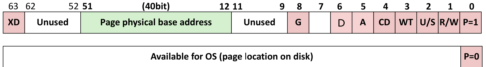
D가 들어섰습니다 — 최하위 단계에는 “더 내려갈지 여기서 멈출지”를 고를 여지가 없으므로 PS가 필요 없고, 대신 이 페이지가 수정되었는지를 기록하는 Dirty 비트가 자리를 차지합니다. 나머지 P · R/W · U/S · WT · CD · A · G · XD의 배치와 의미는 동일하며, 아래쪽 띠의 P = 0 해석도 같아서 “Available for OS (page location on disk)” — 이번에는 표가 아니라 페이지가 디스크의 어디에 있는지를 적는 자리 — 가 됩니다.각 엔트리는 4 KB짜리 자식 페이지를 참조합니다. 상위 단계와 달라지는 부분만 정리하면 다음과 같습니다.
| 비트 | 이름 | 상위 단계와의 차이 |
|---|---|---|
| D | Dirty | 새로 생겼습니다. MMU가 쓰기 발생 시 세우고, 소프트웨어가 지웁니다 |
| PS | Page Size | 없습니다. 최하위 단계에는 “더 내려갈지”를 고를 여지가 없습니다 |
| G | Global | 작업 전환 시 TLB에서 쫓아내지 않는 전역 페이지 — 예컨대 커널 코드 |
| 51–12 | Page physical base address | 가리키는 대상이 표가 아니라 페이지입니다. 물리 페이지 주소의 상위 40비트이며, 페이지가 4 KB 정렬되도록 강제합니다 |
P · R/W · U/S · WT · CD · A · XD의 의미는 5.4절과 같습니다.
D와 A 두 비트가 3장의 스와핑을 실제로 구현합니다.
A(Accessed) — 3.4절에서 “어떤 페이지를 내보낼 것인가”라는 질문에 답하기 위한 재료입니다. 최근에 참조되지 않은 페이지가 희생자 후보가 됩니다.D(Dirty) — 희생자를 정한 뒤 “내보내기 전에 디스크에 써야 하는가”를 답합니다.D = 0이면 디스크의 사본과 같으므로 그냥 버리면 되고,D = 1일 때만 쓰기 비용이 발생합니다.
읽기만 한 페이지는 공짜로 내보낼 수 있다는 이 비대칭이, 실행 코드 페이지(읽기 전용이라 언제나 D = 0)를 메모리 압박 시 가장 먼저 버리는 이유입니다.
5.6 현재의 x86_64 주소 변환 (Current x86_64 Address Translation)
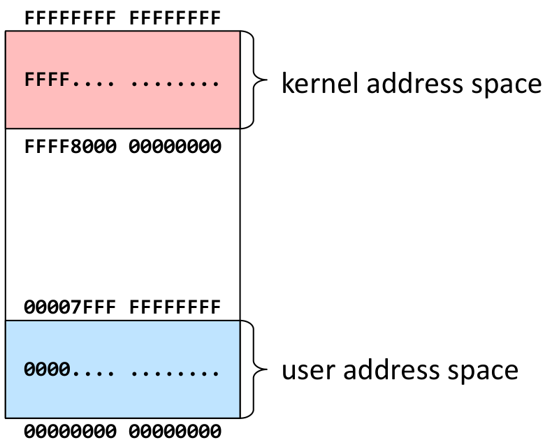
FFFFFFFF FFFFFFFF부터 맨 아래 00000000 00000000까지입니다. 위쪽 분홍 상자는 FFFF8000 00000000에서 FFFFFFFF FFFFFFFF까지의 구간이며 오른쪽에 kernel address space라고 표시되어 있습니다. 아래쪽 파란 상자는 00000000 00000000에서 00007FFF FFFFFFFF까지로 user address space입니다. 그리고 그 사이의 압도적으로 넓은 흰 공백이 이 그림의 주인공입니다 — 이 구간의 주소들은 어떤 것도 유효하지 않습니다(non-canonical). 48비트만 실제로 쓰이므로 상위 16비트는 비트 47의 값으로 부호 확장되어야 하고, 그 결과 유효한 주소는 위아래 두 덩어리, 이른바 두 개의 “정규 반쪽(canonical halves)”으로만 존재합니다. 4장 layout.c의 출력에서 전역 데이터가 0x5621…, 스택이 0x7fff…였던 것은 둘 다 아래쪽 파란 상자, 즉 사용자 공간 안의 주소입니다.- 정규 주소 공간(canonical address space)
- 현재는 64비트 중 48비트만 사용합니다.
- 완전한 64비트 주소 공간(16 EB = 1600만 테라바이트)은 오늘날에도 여전히 “너무 큽니다”.
- 48비트 구현은 256 TB의 사용 가능한 가상 주소 공간을 제공합니다.
- 상위 16비트는 비트 47에서 부호 확장되며, 그 결과 두 개의 “정규 반쪽”이 만들어집니다.
\[ 2^{48} = 256\,\mathrm{TB}, \qquad 2^{64} = 16\,\mathrm{EB} \]
두 반쪽 사이의 주소에 접근하면 페이지 폴트가 아니라 일반 보호 예외(general protection fault)가 납니다. 페이지 폴트는 “주소는 유효한데 지금 메모리에 없다”는 뜻이지만, 비정규 주소는 주소 자체가 형식에 맞지 않는다는 뜻이기 때문입니다.
이 설계는 훗날을 위한 것이기도 합니다. 부호 확장 규칙을 두면 주소 폭을 48비트에서 57비트(5단계 페이징)로 늘릴 때 커널 공간이 여전히 맨 위에, 사용자 공간이 여전히 맨 아래에 남아, 기존 소프트웨어의 가정이 깨지지 않습니다.
6. 요약 (Summary)
강의가 스스로 정리한 결론은 다음과 같습니다.
가상 메모리 = 물리 메모리의 추상화
프로세스마다 하나씩 있는 주소 번역 메커니즘으로 유지됩니다.
구현은 하드웨어(메모리 관리 장치)와 운영체제가 관리하는 페이지 테이블 자료구조의 조합으로 이루어집니다.
다음을 가능하게 합니다.
- 사적 메모리(private memory)
- 공유 메모리(shared memory)
- 큰 주소 공간을 가진 여러 프로세스를 하나의 물리 주소 공간에 담기
- 페이징/스와핑(paging/swapping)
- 세밀한 접근 권한(fine-grained access permissions)
정리하며 (Closing Remarks)
이번 강의의 논증 사슬을 단계별로 압축하면 다음과 같습니다.
| 단계 | 내용 | 근거 |
|---|---|---|
| ① 기존 모델의 가정 | 메모리는 “아주 큰 바이트 배열 하나”다 — 단, 쓰는 주체가 하나뿐일 때만 성립한다 | Memory Up Until Now |
| ② 가정이 깨지는 네 지점 | 담기지 않고(16 EB vs 수 GB), 배치를 정해야 하고, 서로 짓밟고, 그러면서 함께 봐야 한다 | Problem 1–4 |
| ③ 최소한의 해법 | VA와 PA 사이에 간접층 한 겹을 끼운다 — 프로세스마다 사적 주소 공간이 생긴다 | Solution: Indirection |
| ④ 간접층의 정체 | 주소를 페이지 단위로 잘라 \(\mathrm{VPN} \to \mathrm{PPN}\)만 번역한다. 오프셋은 손대지 않는다 | \(\mathrm{PA} = \mathrm{PT}[\mathrm{VA}/\mathrm{PS}] + \mathrm{VA} \bmod \mathrm{PS}\) |
| ⑤ 책임의 분담 | 번역은 MMU(하드웨어)가, 표는 메모리에 두고 MMU는 PTBR(=CR3) 포인터 하나만 쥔다 |
Memory Management Unit |
| ⑥ 캐시의 어휘 빌려오기 | 레벨 \(k\)는 레벨 \(k+1\)의 캐시이고, 주기억장치는 디스크의 캐시이며 그 관리자는 운영체제다 | Who Manages the Cache? |
| ⑦ 격리는 도달 불가능성이다 | 표가 프로세스마다 따로 있으므로 PTBR 하나만 바꾸면 주소 공간이 통째로 교체된다 | Address Space Isolation |
| ⑧ 공유는 표의 값이 정한다 | 두 표가 같은 PPN을 적으면 공유된다 — VA가 같을 필요는 없다 | Shared Memory |
| ⑨ 용량 문제의 해소 | 표의 칸을 비워 둘 수 있으므로 가상 페이지 총수가 아니라 실제 쓰는 페이지 수만 제약이 된다 | 21페이지 “보기” vs 11페이지 보유 |
| ⑩ 빈 칸에 의미 부여하기 | 빈 칸에 “디스크 몇 번 슬롯”을 적으면 페이지 폴트 → 적재 → 명령 재실행으로 스와핑이 완성된다 | Physical Memory as a Cache |
| ⑪ 칸에 비트 몇 개 더 붙이기 | R·W·X·S를 붙이면 페이지 단위 권한이 생기고, 위반은 번역 도중 예외로 잡힌다 |
Memory Access Permissions |
| ⑫ 로그 한 화면의 검증 | 두 프로세스가 같은 VA를 찍는데 global_int는 갈라지고 shared_int는 이어진다 |
layout.c + fork + mmap(MAP_SHARED) |
| ⑬ 실제 하드웨어의 표 | 36비트 VPN을 9비트씩 4단계로 쪼개 표 한 장을 4 KB에 맞추고, 쓰지 않는 가지는 만들지 않는다 | Core i7 4-level page table |
| ⑭ 번역 비용의 회수 | 4단계 조회는 비싸므로 TLB로 캐싱하고, VPO가 번역되지 않는다는 점을 이용해 캐시 조회와 병렬화한다 | L1 TLB / CI+CO = 12비트 |
| ⑮ 아직 남은 여유 | 64비트를 다 쓰지 않고 48비트 + 부호 확장으로 두 정규 반쪽만 사용한다 | Canonical address space |